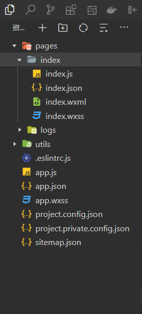

当前页面的逻辑
包含：数据、事件处理函数、生命周期函数和其他函数
当前页面的结构
由各种组件构成：系统组件和自定义组件
避免使用HTML标签
更多组件，请访问 component
当前页面的配置
很多配置项同app.json；应严格按照JSON语法使用双引号"，不能使用单引号'
导航标题、背景；多页面时通常设置为不同的样式；如果未设置，则和全局设置的保持一致
是否使用组件
也可以使用API，根据传递的参数完成导航标题设置
onLoad(option: any) {
wx.setNavigationBarTitle({
title:option.name
})
}
当前页面的样式
同CSS样式使用基本相同，但是功能没有CSS那么丰富；...强烈吐槽
App({
onLaunch() {
// 展示本地存储能力
const logs = wx.getStorageSync('logs') || []
logs.unshift(Date.now())
wx.setStorageSync('logs', logs)
// 登录
wx.login({
success: res => {
// 发送 res.code 到后台换取 openId, sessionKey, unionId
}
})
},
globalData: {
userInfo: null
}
})
const app = getApp()
"entryPagePath": "pages/test/test"
"pages": [
"pages/index/index",
"pages/photo/photo",
"pages/video/video",
"pages/guest/guest"
]
"pages": [
"pages/index/index",
"pages/photo/index",
"pages/video/index",
"pages/guest/index"
]
"window": {
"navigationBarTextStyle": "white",
"navigationBarTitleText": "Our Wedding",
"navigationBarBackgroundColor": "#ff5d73",
"backgroundColor": "#fed",
"backgroundTextStyle": "dark",
"enablePullDownRefresh": true,
"onReachBottomDistance": 50,
"navigationStyle": "custom"
}
"tabBar": {
"color": "#000000", //未选中颜色
"selectedColor": "#ff5d73", //选中颜色
"borderStyle": "white", //默认黑色dark
"list": [{
"pagePath": "pages/index/index",
"text": "love",
"iconPath": "imgs/wedding0.png",
"selectedIconPath": "imgs/wedding1.png"
},{
"pagePath": "pages/photo/photo",
"text": "photo",
"iconPath": "imgs/photo0.png",
"selectedIconPath": "imgs/photo1.png"
},{
"pagePath": "pages/video/video",
"text": "video",
"iconPath": "imgs/video0.png",
"selectedIconPath": "imgs/video1.png"
},{
"pagePath": "pages/guest/guest",
"text": "guest",
"iconPath": "imgs/guest0.png",
"selectedIconPath": "imgs/guest1.png"
}]
}
"style": "v2"
"lazyCodeLoading": "requiredComponents"
// 导入其它样式文件
@import '/utils/css/reset.wxss';
@import '/utils/iconfont.wxss';
@import '../../utils/transfonter.org-20240229-142749/stylesheet.wxss';
page{
--themeColor:#eb4450;
--tips-color:rgb(13, 206, 7);
background-color: #f7f7f7;
font-size: 28rpx;
}
input {
border: none;
outline: none;
box-sizing: border-box;
background-color: transparent;
height: 60rpx;
}
button {
border: none;
outline: none;
box-sizing: border-box;
cursor: pointer;
height: 60rpx;
}